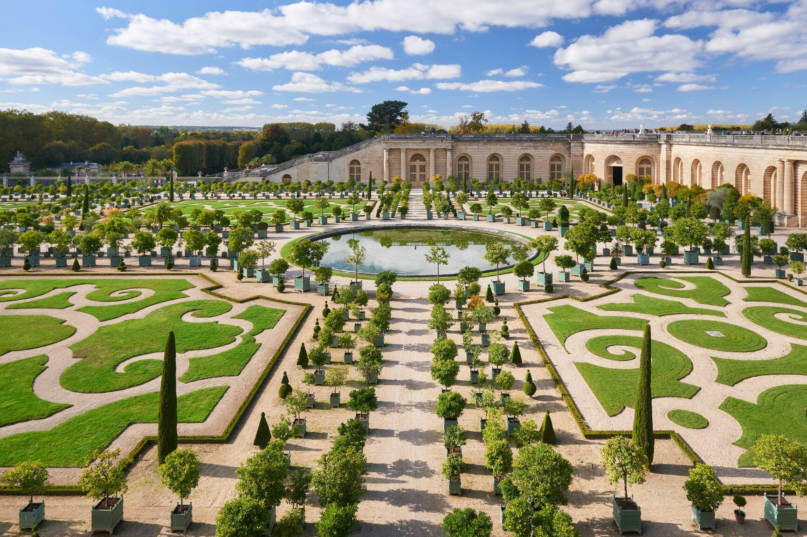

Louvre Museum
Based in the prestigious Louvre Palace, the former royal residence and the biggest palace in Europe, the Louvre is the largest and most visited museum in the world! At this temple of culture in Paris' 1st arrondissement, near the Palais Royal - Musée du Louvre Metro station, a variety of sumptuous and diverse art collections unfurl before visitors' eyes. No fewer than 35,000 works of art, spread across over 73,000 m² of rooms, are all on display to delight lovers of paintings, sculptures and other art objects.
b
Eiffel Tower
The Eiffel Tower — or, La Tour Eiffel — has remained one of the world's most recognizable landmarks, symbolizing the romance and ingenuity of the City of Lights. Located in the 7th arrondissement, this immense iron monument, a true architectural and technical feat, is now the symbol of Paris and France for tourists from all over the world. The pride and joy of Parisians was quick to become the world's most visited paid admission monument! Many visitors queue up to discover one of the most beautiful panoramic views available of the city of Paris. Indeed, on the second floor there is a breathtaking view of Paris' buildings and monuments.
Paris Catacombs
Paris catacombs are a winding maze of tunnels that stretches deep underneath one of the most famous cities in the world and plays host to roughly 6 million artfully arranged human skeletons and with a description like that, is it any surprise that the idea of visiting the Paris catacombs has fascinated visitors for centuries?

Sainte Chapelle
The Sainte-Chapelle or Holy Chapel is a Gothic-style treasure box of exquisite stained glass, sculpture, and paintings. Built for Louis IX as a royal chapel around A.D. 1238, it’s located on the premises of the Palais de la Cité where French kings ruled for centuries. The Sainte-Chapelle is the finest royal chapel to be built in France and features a truly exceptional collection of stainedglass windows. It was at the heart of the royal residence, the Palais de la Cité, to house the relics of the Passion of Christ. Adorned with a unique collection of fifteen glass panels and a rose window forming a veritable wall of light, the Sainte-Chapelle is a gem of Rayonnant Gothic architecture.
]
Centre Pompidou
Located at the heart of the Beaubourg district in Paris' 4th arrondissement between the Marais and Les Halles, not far from Rambuteau Metro station, the Centre Pompidou astounds visitors with its modern and unusual architecture in bright colours. It is a world-famous centre of art and culture. Built at the request of President Georges Pompidou to create an original cultural institution at the heart of the capital, today it houses the best of modern and contemporary art. On the 4th and 5th floors, you can thus admire a remarkable collection of modern art from 1905 to 1960, with works by such big names as Picasso, Matisse and Soulages, as well as contemporary art from 1960 to the present day, by such famous artists as Tinguely, Niki de Saint-Phalle, Klein, Arman and Warhol.
Seine River
Paris is a very walkable city which makes exploring it by foot both attractive and popular. That said, one of the most popular activities in Paris for visitors is taking a Seine River Cruise. A Seine River cruise is a little touristy but a truly amazing way to see Paris. You get a truly unique perspective on some of the city’s most famous sites. The Seine River pulls water from a little place known as “Sources de la Seine” or Source of the Seine. It runs all the way across France to the English Channel. Where is Sources de la Seine? According to Wikipedia the Seine is 775km or roughly 482 miles from the English Channel running almost clear across France. The source of this river is only about 171km (106mi) from Switzerland!

Palace of Versailles
One of the greatest achievements of French 17th-century art, the Palace itself contains a staggering 2,300 rooms, with over 100 bearing witness to the lavish luxury of the former royal residence, and another 100 displaying the remarkable collection of paintings and sculptures of the Museum of French History, created by Louis-Philippe in 1837. In addition to the Palace, the kings of Versailles built more intimate spaces in an attempt to gain some brief respite from courtly etiquette. The Grand Trianon is a spectacular colonnaded structure of pink marble opening onto a central courtyard. Here the Hall of Mirrors is particularly impressive, at 73 metres long with 357 mirrors, where courtiers and illustrious guests were received at the time of Louis XIV. The neo-Classical Petit Trianon was a home at the heart of the gardens, eventually given as a gift to Marie Antoinette in 1774.

Arc de Triomphe
Served by the Charles de Gaulle - Étoile Metro station in the 8th arrondissement, the Arc de Triomphe de l'Étoile is surely one of the most famous monuments in Paris. Built between 1806 and 1836, to honour Napoleon Bonaparte's Great Army and commemorate the victory at Austerlitz. At the top of the Arc de Triomphe, the panoramic terrace, which is reached by climbing no fewer than 248 steps, offers an untrammelled view of the twelve avenues that radiate outwards from the Place de l'Étoile, including the very famous Avenue des Champs-Élysées and the no less famous Avenue Foch. There are two orientation tables to help you spot the main tourist attractions in the capital. On your way back, take a little time to rediscover the Attic room, which contains sculptures as well as an exhibition on the history of the edifice.

Musee d'Orsay
OInternationally renowned for its rich collection of Impressionist art, the Musée d'Orsay also displays all Western artistic creation from 1848 to 1914. Its collections represent all expressive forms, from painting to architecture, as well as sculpture, the decorative arts and photography. You're sure to be dazzled by the beauty of the place: a train station that looks like a palace, inaugurated for the 1900 Universal Exposition.
Loire Vally
Europe’s longest river, the Loire, flows past some 20 castles open to visitors—there are hundreds of stories and histories to be discovered, fragrant gardens to inhale, forest to explore and wines to taste. Go back in time in the Loire Valley, always ready and waiting to offer you its jewel-like heritage. As one of the most visited areas of France, the Loire Valley is easily accessible from Paris and indeed anywhere in Europe via the countries excellent road and rail networks.